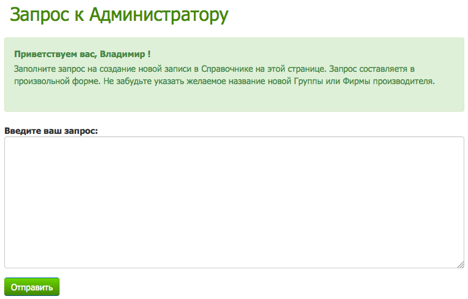

Помощь по работе в Системе учета Машин и Механизмов
Общие вопросы по работе в Системе
Настоящая система учета перегрузочных машин в морских портах разработана с соблюдением последних требований в области стандартизации и унификации ведения упорядоченного документооборота в российских портах и ориентирована на повышение уровня производительности и культуры организации отчетности технических и технологических служб операторов морских терминалов (стивидорных компаний).
Для целей повышения производительности интерфейс приложения максимально упрощен и интуитивно понятен.
Вся система построена на серверной технологии и для пользования сотрудниками требуется только компьютер, подключенный к сети Интернет и браузер, поддерживающий все основные функции языка гипертекстовой разметки. Подключение дополнительных устройств, программ и расширений не требуется.
Кроме всего прочего, важным достоинством данной системы является то, что для поддержания ее в актуальном состоянии, расширения функциональности, работоспособности не требуются периодические обновления и отслеживания изменений - все действия производятся автоматически в фоновом режиме по мере внесения изменений в законодательство, интерфейс программы без затрагивания непосредственно данных хранящихся в базе.
Безопасность вводимых данных обеспечивается уровнями проверки прав доступа и серверными технологиями.
Целостность данных, хранящихся на удаленном сервере подвергается многократному резервированию и позволяет уверенно использовать базы данных даже для хранения критичной к сохранности информации.
С помощью данной Системы пользователи могут вести учет любых машин и механизмов, находящихся на балансе Компании, своевременно вносить изменения в регистрах учета, формировать отчеты по списочному и количественному составу.
В отчетах применяются гибкие условия отбора и фильтрации записей. Это позволяет наглядно демонстрировать структуру, состав, дифференциацию Машин и Механизмов как внутри компании, так и в целом по всем Портам.

Для запуска и работы в Системе необходим компьютер, подключенный к сети Интернет.
Операционная система может быть любая.
Программное обеспечение должно содержать стандартный Интернет-браузер, с установленными последними обновлениями.
Версии рекомендуемые для работы:
| Интернет-браузер | Версия | |
|---|---|---|
| 1 | Google Chrome | 36 |
| 2 | Firefox | 31 |
| 3 | Internet Explorer | 8.0 |
| 4 | Safari | 5.0 |
Так как хранение и обработка введенной информации осуществляется на удаленных защищенных серверах, то для доступа к ним требуется подключение к сети Интернет.
Скорость соединения может влиять на проведение операций и осуществление запросов к базе данных. Рекомендуется использовать высокоскоростное подключение, а в местах где это невозможно подключение через модемы сотовой связи.
Для предотвращения несанкционированного доступа в Систему и к данным используется многоуровневая защита, основанная на проверке идентификационных данных пользователя.
В целях соблюдения конфиденциальности личных данных, доступ к ним ограничен и введен запрет на использование учетных данных и пароля другими лицами.
Сами учетные данные о Машинах и Механизмах хранятся на защищенных серверах и в целях сохранности ведется учет изменений и дополнений, вносимых пользователями.
Справка по вопросам регистрации в Системе
- Составляется список лиц, допущенных к работе в Системе.
- Утвержденный руководителем Компании-оператора список направляется в адрес Службы поддержки.
- Пользователи на странице Регистрации заполняют форму с данными о себе.
- В течение 24 часов администратор Службы поддержки сверяет данные и разрешает работу в Системе.
Вопросы по работе со Справочниками Системы
Справочник Стран содержит сведения о написании русскоязычного и англоязычного наименования Страны.
Данный справочник используется в целях упорядочения информации по принадлежности Компании-оператора, а также при классификации Производителей Машин и Механизмов.
- Для редактирования записи нужно нажать наименование, выделенное цветом.
- Для добавления в таблицу Справочника Стран новой записи следует нажать кнопку Добавить
В появившемся окне следует заполнить соответствующие поля для данных.
После нажатия кнопки Сохранить измененные данные будут занесены в Базу данных системы.
После нажатия кнопки Скопировать в Базе данных системы появится новая запись с введенными данными.
Справочник Производителей содержит сведения об известных производителях.
Данный Справочник используется для классификации Моделей Машин и Механизмов, используемых в Компаниях-операторах Портов.
- Для редактирования записи нужно нажать наименование, выделенное цветом.
- Для добавления в таблицу Справочника Производителей новой записи следует нажать кнопку Добавить
В появившемся окне следует заполнить соответствующие поля для данных.
После нажатия кнопки Сохранить измененные данные будут занесены в Базу данных системы.
После нажатия кнопки Скопировать в Базе данных системы появится новая запись с введенными данными.
Справочник Групп позволяет вести упорядоченный учет и дифференциацию различных перегрузочных Машин и Механизмов с целью упрощения доступа и сортировки.
- Для редактирования записи нужно нажать наименование, выделенное цветом.
- Для добавления в таблицу Справочника Производителей новой записи следует нажать кнопку Добавить
В появившемся окне следует заполнить соответствующие поля для данных.

После нажатия кнопки Сохранить измененные данные будут занесены в Базу данных системы.
После нажатия кнопки Скопировать в Базе данных системы появится новая запись с введенными данными.
Справочник Моделей содержит наиболее полный список разлличных видов перегрузочных Машин и Механизмов, используемых для работы в портах.
В случае необходимости может быть дополнен необходимыми данными или внесены исправления в существующие записи.
- Для редактирования записи нужно нажать наименование, выделенное цветом.
- Для добавления в таблицу Моделей новой записи следует нажать кнопку Добавить
В появившемся окне следует заполнить соответствующие поля для данных.
После нажатия кнопки Сохранить измененные данные будут занесены в Базу данных системы.
После нажатия кнопки Скопировать в Базе данных системы появится новая запись с введенными данными.
Вопросы по работе со списком Машин и Механизмов
Все записи об имеющихся в распоряжении Компании-оператора перегрузочных машинах и подъемно-транспортном оборудовании хранятся в этой таблице
Каждая запись содержит подробные сведения о наименовании, принадлежности к группе, модели Механизма и прочие реквизиты, необходимые для учета и идентификации.
При необходимости к каждой записи может быть прикреплено одно или несколько изображений.
В дальнейшем, записи участвуют в формировании различных отчетов.
Для добавления новой учетной записи в таблицу необходимо нажать кнопку Добавить
Для изменения учетной записи в таблице необходимо нажать наименование, выделенное цветом.
В появившемся окне следует заполнить соответствующие поля для данных.
После нажатия кнопки Сохранить измененные данные будут занесены в Базу данных системы.
После нажатия кнопки Скопировать в Базе данных системы появится новая запись с введенными данными.
Вопросы по работе с Отчетами
Отчеты это специальным образом формируемые таблицы, которые содержат либо сводные данные об имеющихся Машинах и Механизмах, либо особым образом сортированные и группированные данные с Машинами и Механизмами.
Основой каждого отчета являются записи о Машинах и Механизмах, которые были ранее занесены в соответствующий раздел Системы учета.
Все отчеты делятся на два типа:
- Статистические
- Сводные
В качестве Статистических выступают таблицы, где на основе заданных параметров фильтров осуществляются расчеты по количеству единиц Машин и Механизмов и вывод их в наглядном виде.
В качестве Сводных выступают таблицы, где данные с Машинами и Механизмами группируются по определенному признаку и выводятся для печати и дальнейшего использования в качестве учетных документов.
Все записи о Машинах и Механизмах имеют определенные признаки, по которым их можно классифицировать.
Например, каждая Машина или Механизм относятся к определенной Группе (в случае невозможности определения ее принадлежности она попадает в Группу "Прочие")
Соответственно, если есть необходимость включить в Отчет только "Экскаваторы", то в блоке фильтров для этой цели имеется опция Группы и в ней необходимо выбрать "Экскаваторы".
При этом после нажатия на кнопку Сформировать в отчет будут включены сведения только об Экскаваторах (например их количество каждого из Производителей в отчете "Кол-во Механизмов разных Производителей").
Данный отчет осуществляет подсчет количества Машин и Механизмов в каждой из Групп.
В случае отсутствия записей по какой-либо Группе она не включается в Отчет.
Например, если в Компании-операторе отсутствуют Пневматические перегружатели, то и в Отчете они тоже отсутствуют.
Данный отчет осуществляет подсчет в Компании-операторе количества Машин и Механизмов определенного Производителя.
Например, Toyota. Если данный брэнд в Компании представлен какой-либо техникой, это будет отражено в Отчете путем подсчета количества единиц техники.
В случае отсутствия записей по какому-либо Производителей он не включается в Отчет.
Данный отчет не осуществляет подсчет количества Машин и Механизмов.
Его назначение сформировать таблицу, содержащую основные сведения о Машинах и Механизмах таким образом, что все записи будут упорядочены по Группам.
Кроме того, если это необходимо, то данный отчет можно сократить только до вывода списка Машин и Механизмов определенной Группы.